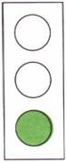
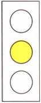
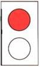
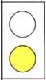
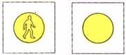
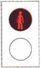
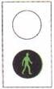
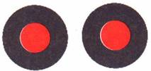

الآلات الضوئية
هـ-1

((ضوء أحمر))
قف ! و إذا وُسم خط وقوف فتوقف قبل خط الوقوف ، فإذا لم يوجد فقف قبل ممر المشاة ، أما إذا لم يوسم خط وقوف أو ممر مشاة فقف بجانب الآلة الضوئية القريبة
هـ-2

((ضوء أحمر مع ضوء أصفر))
قف كما ذُكر بالنسبة للشاخصة هـ-1 ، حتى ظهور الضوء الأخضر . يُحظر العبور عن خط الوقوف أو ممر المشاة أو الدخول إلى المفترق ما دام الضوء الأحمر مضيئاً مع الضوء الأصفر. استعد للسير عندما تتغير الإشارة
هـ-3
((ضوء أخضر))
تقدم ! يجوز السير إلى الأمام والى اليمين والى اليسار ما لم تكن هناك شاخصة إرشاد فوق الآلة الضوئية والتي تشير إلى خلاف ذلك و إذا ظهر ضوء اخضر متقطع فمعناه بأن الضوء الأخضر سينتهي ويظهر بعده الضوء الأصفر
هـ-5
((ضوء أصفر))
على من يقترب من المفترق أن يقف كما ذُكر بالنسبة للشاخصة هـ-1 ، إلا إذا لم يكن بإمكان السائق أن يتوقف بأمان قبل المفترق
وعلى من دخل المفترق أن يخليه فوراً
هـ-6
آلة ضوئية خاصة للمركبات قبل ممر مشاة فيه آلة ضوئية للمشاة أو قبل أي عائق آخر في الطريق ((ضوء أحمر)) قف قبل خط التوقف وإذا لم يكن هناك خط توقف فقبل ممر المشاة
هـ-7
آلة ضوئية خاصة للمركبات قبل ممر مشاة فيه آلة ضوئية للمشاة أو قبل أي عائق آخر في الطريق ((ضوء أصفر)) (أ) ضوء اصفر متقطع : تقدم بانتباه مع مراعاة أحكام الشاخصات (ب) ضوء اصفر ثابت : كمدلول الضوء الأصفر في شاخصة هـ-5
هـ-8
آلة ضوئية خاصة للمركبات قبل منعطف أو تحذير عام أو قبل ممر مشاة ضوء اصفر متقطع مع أو بدون شكل ماشي (أ) تقدم بحذر مع مراعاة أحكام الشاخصات . (ب) إذا أُقيمت آلة ضوئية للمشاة بجانب ممر المشاة فعلى سائق المركبة أن يُمَكِن الماشي من عبور الشارع بأمان .
هـ-9
آلة ضوئية خاصة بالمشاة بجانب ممر المشاة. شكل شخص واقف باللون الأحمر يُحظر عبور الشارع وعلى من يتواجد في الشارع أن يخليه فوراً .
هـ-10
آلة ضوئية خاصة بالمشاة بجانب ممر المشاة. شكل شخص ماشي باللون الأخضر يجوز عبور الشارع بحذر على ممر المشاة .
هـ-11
ضوء احمر مزدوج متقطع قف قبل خط التوقف وإذا لم يوجد خط توقف فقبل الحاجز القريب وإذا لم يوجد حاجز فعلى مسافة لا تقل عن 4م من خط السكة القريب ، وذلك لغاية توقف الضوء الأحمر المتقطع